或路径
或路径  都不能收缩到点
都不能收缩到点 大约从 1870 年开始——克莱因的埃尔朗根纲领可以被视为一个里程碑——对代数学的新理解开始应用于全部数学领域。19 世纪的代数学家发现的新的数学对象（矩阵、代数、群、簇等）开始被数学家们运用到他们的研究工作中，他们把这些新数学对象作为解决几何学、拓扑学、数论和函数论等其他数学领域中的问题的工具。就几何学而言，我已经在第 13 章中描述了一些几何代数化的内容。本章将代数化的范围扩展到 19 世纪末与 20 世纪前半叶的代数拓扑、代数数论以及代数几何的进展中去。
※※※
我首先要介绍的是代数拓扑。正如在“数学基础知识：代数几何”中介绍的那样，拓扑学通常被叫作“橡皮几何学”。想象一个二维曲面，例如球面，假设它是由某种可伸缩的材料制成的。这个橡皮球面可以通过拉伸或挤压变换成其他任意与球面“相同”的曲面，这就是拓扑学家关心的东西。为了让拓扑学具备数学的精确性，你需要再制定一些规则，例如切割、黏合、把一个有限区域“挤压”成一个没有维度的点，或者允许这个橡皮曲面可以像雾一样穿过自身，这些规则在不同的应用中略有不同。不过在这里，这种宽泛而熟悉的定义已经足够了。
直到 19 世纪末，拓扑学都没有显示出与代数有多大关系。事实上，它的早期发展非常缓慢。“拓扑”这个词最早是哥廷根数学家约翰·利斯廷（1808—1882）在 19 世纪 40 年代使用的。利斯廷的很多想法都似乎来自高斯，他与高斯关系很密切。然而，高斯从未发表过任何与拓扑相关的文章。1861 年，利斯廷描述了一个单侧曲面，现在我们称之为莫比乌斯带（图 14-1）；莫比乌斯在四年后也写下了关于这个曲面的文章，由于某些原因，正是他的介绍才引起了数学家们的注意。尽管现在为其正名为时已晚，但是我还是将图 14-1 标记为利斯廷带，为利斯廷恢复一点点公正。（另外，如果取图 AG-3 中有折痕的球面，从上面剪下来一块小圆片，那么剩下的部分就与利斯廷带拓扑等价 1。）
1两个对象在适当的拉伸和挤压下“相同”（即拓扑等价）可以用一个更漂亮、更时髦的术语来表述：同胚。不过，说起它，要说的可就多了，为了使表述简单起见，我还是继续用“拓扑等价”这个词。
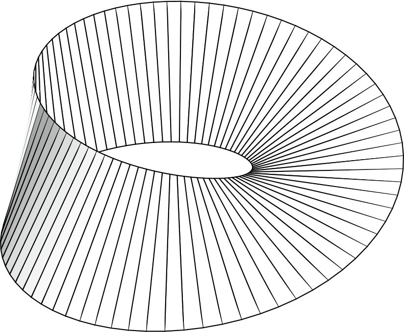
图 14-1 利斯廷带
1851 年，黎曼在他的博士论文中使用复杂的自相交曲面来帮助理解函数，这一做法是推动拓扑思想发展的另一个因素。在仔细研究这些黎曼曲面后，若尔当（见第 13 章）提出了一个研究这些曲面的想法——观察嵌入在其中的封闭路径，看看会发生什么。我在这里用“曲面”代替“空间”，使其更直观一些。
例如，想象一个球面，取球面上的一点，从这一点出发，沿一个圈行走，直到回到原点。如果不对你刚才走过的这条路径做任何非拓扑的操作，也不离开这个曲面，那么它能一直收缩到这个出发点吗？它能够光滑而连续地收缩吗？是的，它可以。这个球面上的任何一条路径都可以做到这一点。
对于一个环面来说就不是这样了。图 14-2 中描绘的路径 或路径 都不能收缩到点
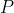
，但是路径 可以收缩到点 。因此，也许研究这些路径确实可以让我们了解关于曲面拓扑的信息。
可以收缩到点 。因此，也许研究这些路径确实可以让我们了解关于曲面拓扑的信息。
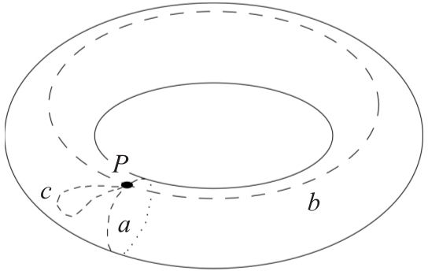
图 14-2 环面上的闭路
1895 年，一位才华横溢的法国数学家把这些想法代数化，这位数学家就是巴黎综合理工学院的亨利·庞加莱（1854—1912）。庞加莱是这样陈述的：考虑一个曲面上的所有可能的若尔当闭路，即起点和终点相同的所有路径。令这个基点固定不动，把所有闭路分成若干集族，如果一条闭路能够光滑地变形为另一条闭路，那么这两条闭路就属于同一个族，即它们是拓扑等价的。考虑这些族，无论它们有多少。两个族的合成定义如下：首先经过第一个族的一条路径，然后再经过第二个族的一条路径（选择哪条路径无关紧要）。
现在，你有了一个以闭路族为元素的集合，而且还有一种将两个元素合成为另一个元素的方法。这些元素（即闭路族）能构成一个群吗？庞加莱证明它确实是一个群，于是代数拓扑就这样诞生了。
你还需要一小步就可以得到任意曲面的基本群的概念——你需要摆脱你的闭路对任意特定基点的依赖（事实上，它们无须是我定义的精确的若尔当闭路）。这个群中的元素是这个曲面上的路径族，合成两个路径族的法则如下：首先经过第一个族的一条路径，再经过第二个族的一条路径。球面的基本群实际上是只有一个元素的平凡群。每一条闭路都可以光滑地收缩成这个基点，所以只有一个路径族。
另外，环面的基本群是这么一个东西——
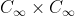
，它看起来有点儿吓人，但实际上它不是这样的。这个群中的元素为所有可能的整数对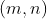
，以加法作为合成法则：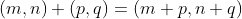
。元素 对应于先经过图 14-2 中的 路径  次，再经过 路径
次，再经过 路径  次。（如果 是负数，就沿相反的方向走。按照下面的说法做也许有助于你的理解：如果你以某个角度从这个基点出发，那么在结束环绕回到基点之前，你螺旋地绕这个环面转了 圈。）这些整数对在这个简单的合成法则下构成群 。2
次。（如果 是负数，就沿相反的方向走。按照下面的说法做也许有助于你的理解：如果你以某个角度从这个基点出发，那么在结束环绕回到基点之前，你螺旋地绕这个环面转了 圈。）这些整数对在这个简单的合成法则下构成群 。2
2
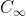
称为“无限循环群”。如果用乘法来表示这个群的合成法则，那么 是由一个元素 的所有正整数次幂、负整数次幂和零次幂组成的：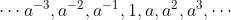
。因为 的两个幂相乘等于它们的指数相加（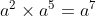
），因此 的另一个实例就是普通的整数加法群 。由于这个原因，你有时会看到环面的基本群写成
。由于这个原因，你有时会看到环面的基本群写成 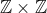
，或者更严谨地写成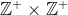
，因为 代表一个环，而不是一个群。
我提到过，球面的基本群是只有一个元素的平凡群。但是这个事实本身却并不平凡。
事实证明，任何以只有一个元素的平凡群为基本群的二维曲面一定与球面拓扑等价。现在，我们熟悉的嵌入在普通三维空间里的二维球面在高维空间中有类似物。例如，一个弯曲的三维空间“就像”一个球面，但是它处于四维空间中，有时被称为超球面 3。问题来了：在四维空间中，任何一个以平凡群为基本群的三维弯曲空间与这个超球面是否也是拓扑等价的？
3有时也被称为三维球面。然而人们很难在头脑中想象这个术语，至少对非数学专业人士来说是这样的。“三维球面”是指普通球的二维表面弯曲地放在三维空间中的二维曲面吗？还是指一个超球的难以想象的三维表面弯曲地放在四维空间中的三维曲面呢？对数学家来说，三维球面指的是后者，因为黎曼告诉我们要从一个流形的内部考虑流形这个空间。不过，非数学专业人士通常把二维曲面放在三维空间中观察，所以前者也有点儿道理。
1904 年，庞加莱提出了著名的庞加莱猜想，断言上述问题的答案是肯定的。直到 2005 年末，这个猜想既没有被证明，也没有被推翻。在发表于 2002 年和 2003 年的一系列论文中，俄罗斯数学家格里戈里·佩雷尔曼（1966— ）证明了它是正确的。当我在写这本书时（本书英文版出版于 2006 年 5 月），数学家们仍在评审佩雷尔曼的工作。根据这些评审报告的非正式报道，越来越多的人认为佩雷尔曼实际上已经证明了这个猜想 4。庞加莱猜想是七个千禧年大奖难题之一，解决其中任何一个问题都将获得美国马萨诸塞州剑桥市的克雷数学研究所提供的 100 万美元奖金。如果佩雷尔曼的证明是正确的，那么他将获得这 100 万美元 5。
4佩雷尔曼确实证明了庞加莱猜想，这个证明现在已经得到数学界的广泛认可。——译者注
52006 年，佩雷尔曼被授予菲尔兹奖，但他拒绝领奖。此外，佩雷尔曼也拒绝领取克雷数学研究所的这份 100 万美元的奖金。——译者注
当一个数学理论开始产生猜想时，它就开始活跃起来了。拓扑学就是伴随着庞加莱 1895 年出版的著作《位置分析》而活跃起来的。在拓扑学发展的最初几十年间，它经常被称为“位置分析”。直到 20世纪 30 年代，人们才普遍用“拓扑学”来命名这个学科。我想这应该感谢所罗门·莱夫谢茨（1884—1972），我稍后将详细介绍这个人。
※※※
庞加莱成为现代拓扑学的创始人，这里有点儿奇怪。
数学家认为，拓扑学实际上有两种风格：一种源自几何学的启示，另一种源自分析学。这里的“分析”指的是数学意义中的分析，即以函数、极限、微分和积分作为研究对象的数学分支，这些研究对象都与连续性有关。如果你回头看一下我在前面多次提到的光滑和连续变形，你就会掌握这种拓扑意义中的联系。从某种意义上说，如果没有光滑、连续、从一个位置到另一个位置的无穷小移动等基础概念，即一些分析的思维方式，那么拓扑学就没有意义。
用数学术语来说，分析的对面是组合。在组合数学中，我们研究的事物可以数出来：1、2、3，等等，且整数之间不存在其他数。因为相邻整数之间没有整数，所以从一个整数到另一个整数没有一条光滑的路径，我们需要跳过一个个间隔。分析数学是连贯的，可以光滑地在连续的空间中穿梭；而组合数学是断断续续的，从一个整数直接跳跃到另一个整数。
如今，拓扑学应该是所有数学研究中最具有连贯性的，因为橡皮面可以光滑、连续地弯曲和伸缩。然而，最早出现的拓扑不变量却是一个表示孔洞数的整数，它用来衡量一个曲面内环状孔洞的个数，是由瑞士数学家西蒙·吕利耶（1750—1840）于 1813 年发现的。维数是另一个拓扑不变量（在拓扑意义中，你不能把一根鞋带变成一张煎饼，或把一张煎饼变成一块砖），它也是一个整数。甚至连庞加莱发现的那些基本群也不是像李群那样的连续群，而是如“数学基础知识：数和多项式”中定义的那样的可数的离散群。尽管这些群可能是无限群，但是它们的元素可以数出来：1、2、3，等等。连续群中的元素是不可数的。所以，拓扑学中所有有趣的东西似乎都是离散的，而不是连续的。
自相矛盾的是，庞加莱经由分析学进入拓扑学，确切地说，他是在研究微分方程的一些问题时来到了拓扑学领域。然而，他的研究结果以及他在《位置分析》中的所有思想都是组合的。从分析角度研究拓扑学（现在通常被称为点集拓扑学）对他而言没什么吸引力。
同样的矛盾在荷兰数学家布劳威尔（1881—1966）的身上更加明显，他是庞加莱最重要的代数拓扑传人。正是布劳威尔在 1910 年证明了维数是一个拓扑不变量。在现代数学中，更为重要的是他的不动点定理 6。
6拓扑学家海因茨·霍普夫（1894—1971）有一个经常与布劳威尔的不动点定理相混淆的相关定理，这个定理告诉我们，此时此刻在地球表面上的某个点处一定没有风，尽管这是瞬间的。与此等价的是，想象一个覆盖着毛发的球面，你试着朝一个方向梳理这些毛发，你一定会失败的，无论你如何尝试，总是存在（至少）一个“旋涡中心点”，在这里，毛发不能被梳平整。这也是一个定理，不过这个定理常被数学系的学生们不雅地称为“猫肛门定理”（我已经对此删除了一些描述）。这样看来的话，这个定理称：每一只猫必定有肛门。
布劳威尔不动点定理
维球体就是实心单位圆盘（平面上到原点的距离不超过一个单位的点的全体）的概念或实心单位球体（三维空间中到原点的距离不超过一个单位的点的全体）的概念在 维空间中的推广。对于二维平面的情形，这个定理意味着如果你把单位圆盘上的每一个点光滑地移到另外某个点处，把非常靠近的点移到同样非常靠近的点，那么总有一个点在移动前后的位置不变。
不动点定理及其直接推广有很多推论。例如，你小心平稳地搅拌杯子里的咖啡，那么某一滴咖啡，或者说某个分子，最终会停在它的起始位置上。（注意，从拓扑意义上说，杯中的咖啡是一个三维球体，通过搅拌，你就把咖啡中的每一个分子从这个三维球体的某个点  移到了某个点
移到了某个点
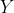
，这就是我们所说的“把一个空间映射到自身”的意思。）还有一个不太明显的例子：把一张纸放在桌子上，用记号笔在桌子上画出它的轮廓。现在把这张纸揉皱，但不要撕破它，然后把它放进画出的轮廓里。这张变皱的纸上存在（至少）一个点，一定在画出的这张纸的轮廓中这个点的正上方。布劳威尔的拓扑学中潜在的自相矛盾，是他得到的结果与他的哲学思想格格不入。对于一名普通的数学家来说，这也许并不重要，但是布劳威尔是一位非常有哲学想法的数学家。他痴迷于形而上学思想（更确切地说是反形而上学的思想）以及为数学寻找一个可靠的哲学基础。
为此，他创立了直觉主义学说，试图将所有数学根植于人类进行连续思考的思维活动之中。布劳威尔说，一个数学命题不真，是因为它对应于某种柏拉图式的更高实体，这种更高实体超出了我们的物理感官，而我们的大脑却能以某种方式理解它。它不真，还因为它遵循了一些语言形符的规则，就像布劳威尔时代的逻辑学家和形式主义者（如罗素和希尔伯特）所主张的那样。它为真，是因为我们可以进行一些适当的心理建构，一步一步体验它的正确性。按照布劳威尔的说法，构成数学的材料（非常粗略地说）并不是从超出我们感知的世界里的某个仓库里取出来的，也不仅仅是语言或者在纸上根据规则操作的符号。它是一种思想——一种人类活动，最终建立在我们对时间的直觉上，它是人类本能的一部分。
这仅仅是对直觉主义最简单的概括，它催生了大量的文献。了解这种哲学的读者会察觉到康德和尼采对其产生的影响。7
7然而，我在这里需要交代一下尼伯恩说的一件事：“康德的数学概念早已过时，如果说它和直觉主义者的观点之间有任何密切的联系，就很容易让人产生误解。不过，一个重要的事实是，像康德这样的直觉主义者是在直觉中寻找数学真理之源头，而不是在抽象概念的理性推断中寻找数学真理之源头。”（摘自《数理逻辑和数学基础》第 249 页。）
事实上，不管怎么说，布劳威尔绝不是这条思路仅有的开创者。类似的思想贯穿数学的现代历史，可以追溯到康德之前，至少可以追溯到笛卡儿的时代。我认为，四元数（见第 8 章）的发现者哈密顿可以被看作直觉主义者。1835 年，他在论文《作为纯时间科学的代数》中试图将康德的基于几何学的数学思想建立在“直觉”和“构造”之上，并引进到代数中。
19 世纪后期，利奥波德·克罗内克（1823—1891）强烈反对格奥尔格·康托尔把“实无穷”引入集合论中，你可以称克罗内克为前直觉主义者。克罗内克认为，像 这样的不可数集合不属于数学，数学即使没有它们也能发展，它们把无用且不必要的形而上学的包袱带到了数学中，数学应该根植于计数、算法和计算。
正是这个思想学派被布劳威尔带到 20 世纪，传播给后来的数学家，例如美国数学家埃里特·毕晓普（1928—1983）。布劳威尔的学说被称为“直觉主义”，毕晓普的学说被称为“构造主义”。这些思想现在都被称为“构造主义”，它们在美国的倡导者是美国柯朗数学科学研究所的哈罗德·爱德华兹教授。爱德华兹教授在其 2004 年的著作《构造数学论著集》（Essays in Constructive Mathematics）中很好地说明了这种方法（事实上，他的其他著作也是如此）。
爱德华兹教授认为，随着功能强大的计算机便捷化，构造主义现已迎来了它的时代，而且一旦人们对思维方式做出了适当调整，那么人们自 1880 年以来取得的很多数学成果看起来都会是误解。我没有资格评判这个预言，但就其特点而言，我个人觉得构造主义的方法非常有吸引力，而且我是爱德华兹教授的著作的“铁杆粉丝”，这可以从我在正文中多处引用他的话看出来。我在第 13 章中对手工制作数学模型和绘制曲线的评述也非常具有构造主义特征。
总之，在布劳威尔 30 岁左右的那几年里，他在代数拓扑方面的研究一定与他的哲学观点有冲突。十年后，他的同胞范德瓦尔登来到荷兰阿姆斯特丹跟随他学习。范德瓦尔登在接受《美国数学学会通告》采访时说：
尽管布劳威尔最重要的研究贡献在拓扑学领域，但是他从来没有开设过拓扑学课程，而且总是只开设直觉主义基础课程。他似乎不再相信自己在拓扑学方面的成果，因为从直觉主义的观点来看，它们是不正确的。根据他自己的哲学，他认为之前做过的每一件事情——甚至他最伟大的成果——都是错误的。他是一个非常奇怪的人，他疯狂地热爱自己的哲学。
※※※
我们在本节谈谈代数数论。这是一个不太容易准确说明的词语。首先，存在被称为代数数的对象，所以在某些时候，代数数论表示对这些对象的研究。代数数是可以成为某个一元整系数多项式方程的解的数。每个有理数都是代数数：
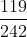
满足方程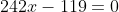
。任何由有理数、普通的四则运算、开方符号组成的表达式也都是代数数：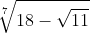
满足方程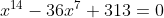
。正如第 11 章所述，根据伽罗瓦的研究，很多五次方程和更高次方程有解，但是不能用这种表达式表示，然而根据定义，这些解也都是代数数。反之，很多数不是代数数，π 就是一个最著名的非代数数的例子。〔非代数数被称为超越数。第一个证明 π 是超越数的人是费迪南德·冯·林德曼（1852—1939），他于 1882 年给出了证明。〕代数数的理论体系非常庞大，其基础是由高斯和库默尔建立的，我在第 12 章中描述了他们的工作。你可以把这种理论体系称为代数数论，数学家们也经常使用这种称呼。其次，像“群”这样的近世代数概念已被证明对解决传统的数论问题非常有用。其中最著名的问题，就是椭圆曲线上的有理点的分布问题。这听起来有点儿令人生畏，但这里的联系实际上可以直接追溯到丢番图和他的关于求诸如方程
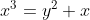
的有理数解的问题（见第 2 章）。如果画出这个方程的图像，我们就会得到数学家所说的椭圆曲线。丢番图得到的解对应着这条曲线上 、
、 坐标都是有理数的点。有这样的点吗？有多少个这样的点？它们在哪里？这些问题可能听起来不太令人兴奋，但事实上，它们把我们引入一个魅力非凡、令人着迷的现代数学领域，而且还带来一个尚未解决的大问题：贝赫和斯维讷通–戴尔猜想（Birch and Swinnerton - Dyer Conjecture）8。
坐标都是有理数的点。有这样的点吗？有多少个这样的点？它们在哪里？这些问题可能听起来不太令人兴奋，但事实上，它们把我们引入一个魅力非凡、令人着迷的现代数学领域，而且还带来一个尚未解决的大问题：贝赫和斯维讷通–戴尔猜想（Birch and Swinnerton - Dyer Conjecture）8。
8这个猜想和庞加莱猜想一样，是克雷研究所提供 100 万美元奖金悬赏的问题之一。参见基思·德夫林 2002 年的著作《千年难题》，该书对所有七个问题都进行了全面的阐述。
就在庞加莱开创代数拓扑研究前后，代数数论领域出现了另一个话题，全新的数在环和域中被发现了。这个数学分支是由库尔特·亨泽尔（1861—1941）开创的，他出生于哥尼斯堡，那里也是希尔伯特的故乡，亨泽尔只比希尔伯特大 25 天。亨泽尔在德国柏林跟随克罗内克学习数学，后来成为德国西部马堡大学的教授，一直到 1930 年退休。他对代数的贡献是在 1897 年左右发现了  进数，这是代数思想在数论中的杰出应用。
进数，这是代数思想在数论中的杰出应用。
进数中的“”代表任意素数，为了便于说明，我选择
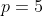
。首先，当我描述 5 进整数时，你可以暂时忘记 5 进数。你或许知道，有一种与任意大于 1 的整数 相关的“钟表算术”，这个算术中只使用 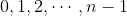
。以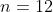
为例，这就构成了普通的钟表盘，只是钟表上的 12 被 0 取代了。如果把这个钟表上的 7 加上 9（也就是问：“7 点过 9 个小时后是几点？”），你会得到 4。通常的记法就是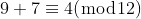
现在列出 5 的幂：5、25、125、625、3125、15 625，等等。为每一个数建立一个“钟表”：从 0 到 4 的“钟表”、从 0 到 24 的“钟表”、从 0 到 124 的“钟表”，以此类推。在第一个“钟表”盘上随机选取一个数，比如 3。现在，在第二个“钟表”盘上随机选取一个匹配数（匹配的意思是，这个数除以 5 之后的余数必须是 3），所以你可以从 3、8、13、18 和 23 中随机选取一个数，比如 8。现在，在第三个钟表盘上随机选取一个匹配数，这个数除以 25 之后的余数必须是 8，所以你可以从 8、33、58、83 和 108 中选取一个数，比如 58。按照这样的方式可以永远进行下去，得到一个数列，我把它们放在括号里，称其为 ，它看起来是这样的：
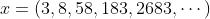
这就是一个 5 进整数，注意，这里是“整数”而不是“数”。我马上会介绍 5 进“数”。给定两个 5 进整数，有一种方法可以把它们加起来，即在每一个位置上应用钟表算术。两个 5 进整数还可以相减和相乘，但不一定能相除。这与正常的整数系 很像，在整数系中，加法、减法和乘法运算是可行的，但除法运算不总是可行的。这是一个环——5 进整数环，通常表示为  。
。
有多少个 5 进整数呢？对于上面的数列中的第一个位置，我们可以从 0、1、2、3、4 这 5 个数中选取一个；同样，对于第二个位置，我们可以从 3、8、13、18、23 这 5 个数中选取一个。对第三个位置、第四个位置以及其他位置也是如此。所以，所有可能的个数是无穷多个 5 相乘。用布劳威尔的观点看，这个数可以被粗略地表示为
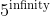
（infinity ：无穷大），当然，这不是一个很恰当的方式。什么集合拥有同样多的元素个数？考虑 0 和 1 之间的所有实数，用五进制取代通常的十进制来表示它们。例如，把实数
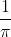
写成五进制的形式是 0.124 343 243 444 234 241 323 423 032 200 423 010 342 002 4…。显然，这样的“小数”的每一个位置都有 5 种可能性，就像我们的 5 进整数！所以 5 进整数的个数等于 0 和 1 之间的所有实数的个数。这是一件有趣的事情。现在我们创建了一个由与整数类似的对象构成的环，而且它们的个数与实数的个数相同！事实上，有一种合理的方法可以定义两个 5 进整数之间的“距离”，事实证明，两个 5 进整数可以任意靠近，这跟普通的整数完全不同，两个普通整数的距离永远不会小于 1。所以这些 5 进整数既有点儿像整数，又有点儿像实数。
正如对普通整数环 可以定义一个“分式域”，即有理数域  ，同样地，对于 ，有一种方法可以定义其分式域
，同样地，对于 ，有一种方法可以定义其分式域  ，在这个域中，我们不仅可以做加法、减法和乘法，而且还能做除法。这就是 5 进数域。
，在这个域中，我们不仅可以做加法、减法和乘法，而且还能做除法。这就是 5 进数域。
如 一样， 也“脚踏两条船”。在某些方面，它像有理数 ；但在另一些方面，它又像实数  。例如，它是完备的，这一点像实数 ，不像有理数 （或 ）。“完备”的意思是，如果由 5 进数组成的一个无穷序列趋近于一个极限，那么这个极限也是一个 5 进数。不是所有域都具有这个性质。例如， 就不是完备域。取 中的数组成的序列：
。例如，它是完备的，这一点像实数 ，不像有理数 （或 ）。“完备”的意思是，如果由 5 进数组成的一个无穷序列趋近于一个极限，那么这个极限也是一个 5 进数。不是所有域都具有这个性质。例如， 就不是完备域。取 中的数组成的序列：
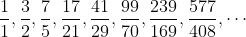
序列中的每一个数的分母是前一个数的分子与分母之和，每一个数的分子是前一个数的分子与分母的 2 倍 之和（例如 29=17+12，41=17+12+12）。这个序列中的所有数都属于 ，但这个序列的极限是  ，它不属于 9。所以 不是完备的。
，它不属于 9。所以 不是完备的。
9这个序列的极限是 的证明：根据通项，如果这个序列的某一项是
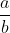
，那么下一项是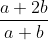
，即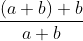
，等价于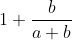
，即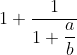
，也就是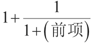
；如果这个序列收敛于某个极限，那么项与项会越来越近，所以此项和前一项几乎是相等的。经过几万亿项之后，它近似为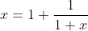
。如果应用一些初等代数方法，这就是一个二次方程，它唯一的正根是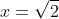
。证毕。当然，这个证明不是非常严格，它的主要缺陷在于第二句话开头的“如果”。不过，我们可以通过把无理数添加到 中，使其变成完备域： 是 的“完备化”，或者更确切地说， 是 的一个完备化。 进数提供了将 完备化的其他方式。
在这里，我们碰到了数论、代数和分析的一些混合概念：素数、环和域、无穷序列和极限。这就是 进数的魅力所在。亨泽尔的学生、其马堡大学教授职位的继任者赫尔穆特·哈塞（1898—1979）把它们引入 20 世纪中期的数学中。哈塞推广了 进数，把 从普通素数推广到更一般的数系中的“素数”，举例来说，这些更一般的数系可以是我在“数学基础知识：域论”中提到的那些域，以及高斯和库默尔在研究复数及分圆整数的因子分解时所发现的那些数系。
1934 年，哈塞离开马堡大学，来到哥廷根大学。说来话长，此前一年，也就是 1933 年，纳粹掌握了德国政权，哥廷根大学的所有犹太教授都被迫离开，很多反纳粹的非犹太人（如第 1 章中提到的奥托·诺伊格鲍尔）也为了抗议而被驱逐或离开。
在当时的种族划分体系下，哈塞不是犹太人。然而，由于他有位犹太人祖先，他的种族不完全“纯洁”，因此他没有资格成为纳粹党员。他似乎不是反犹太主义者，但是他是一个强烈的德国民族主义者，支持希特勒的种族政策。
在诺伊格鲍尔和他的继任者赫尔曼·外尔（这是另一位非犹太人，不过他的妻子有部分犹太血统）辞职后，哈塞被任命为哥廷根数学研究所的负责人。作为一名忠诚的民族主义者，他的愿景似乎是要保持德国数学的活力。与他打交道的纳粹官员不喜欢他，一方面是因为对他的血统的疑虑，另一方面是因为他的知识分子理想主义在当时不太受纳粹的欢迎。然而，在 1945 年希特勒被打败之后，他被英国驻军解除了在大学的职务。他在快 50 岁时还面临重新找教授职位的局面，对此他毫无怨言。
※※※
最后介绍代数几何。现代经典几何形式的代数几何是由 20 世纪初的意大利数学家们发展的，他们有科拉多·塞格雷、圭多·卡斯泰尔诺沃、费代里戈·恩里克斯和弗朗切斯科·塞韦里。前面说过，到了 20 世纪的前十年，这种风格的几何学开始遭遇危机，其基础被动摇，出现了一些很棘手的难题，其中大多数难题与曲面和空间的“退化情形”有关，类似于我在介绍“基础数学知识：代数几何”中描述的二次曲线的退化情形。到了 1920 年，这些难题越发棘手，已经严重到阻碍了它的进一步发展。
很明显，代数几何需要彻底改革，以便为这门学科打下更坚实的基础，就像在 19 世纪从柯西到魏尔斯特拉斯等几代数学家们对分析学所做的工作一样。在 20 世纪三四十年代，代数几何的彻底改革同样也是经过几位数学家坚持不懈的努力才实现的。这一改革的本质就是将几何学提升到更高的抽象层次。
我在前面已经提到了克莱因的埃尔朗根纲领，其思想就是利用群作为组织原则，把 19 世纪兴起的射影几何、非欧几里得几何、黎曼的流形（弯曲空间）几何、复坐标系下的几何等各种几何加以整理。
继克莱因之后，一旦数学家们开始把这些新的几何学视为一个整体，需要把各种想法组织在一起，他们就开始注意所有几何共有的模式和原则。使几何更加抽象、在任意特定空间中都不引入任何直观的点或线的想法占据了主流，19 世纪后期的几位数学家，莫里茨·帕施（1843—1930）（德国吉森大学）、朱塞佩·皮亚诺（意大利都灵大学）、赫尔曼·维纳（1857—1939）（德国哈雷大学）都在尝试实现这种抽象。
1892 年，希尔伯特抓住了这个问题，当时他还是哥尼斯堡大学的无薪讲师。他与一些同事前往哈雷大学，参加了维纳的一个讲座。在这次讲座上，维纳阐述了他将几何学抽象化的方法。返回哥尼斯堡时，希尔伯特一行人需要在柏林换乘。在柏林火车站等车时，他们谈论了维纳的想法。希尔伯特做出了以下评论：“任何时候都能用‘桌子、椅子和啤酒杯’来替代‘点、直线和平面’。”10（你可以把这个评论与第 10 章中引用的皮科克、格雷戈里和德·摩根在 1830 年到 1850 年对代数的评论做个对比。）
10希尔伯特的原文是值得引用的——Man muss jederzeit an Stelle von „Punkten, Geraden, Ebenen,“„Tische, Stühle, Bierseidel“ sagen können.
在接下来的六年里，希尔伯特没有采取实际行动来实现那句令人难忘的话，那时他已经被任命为哥廷根大学的教授。然后，在 1898 年到 1899 年的冬天，他做了一系列讲座，在这些讲座中，欧几里得的传统几何学从一套清晰、完备的抽象法则和公理中衍生出来，就像第 11 章中我为群给出的公理一样。希尔伯特说，公理所指的对象可以是任何对象，但是他为了使阐述更加清晰，把它们说成“点、线和平面”。这些讲座后来被汇编成书，书名是《几何基础》（The Foundations of Geometry）。
那本书在数学家中广为流传，影响深远。希尔伯特自己的数学研究随后转向其他方向，但是他经常“重访”几何。在 1920 年到 1921 年的冬天，他开设了一系列名为“直观几何”的讲座，与 1898 年到 1899 年的讲座相比，这次讲座论述的范围更广，而且不那么抽象。这个系列的讲座也被汇编成书，书名是《直观几何》（Geometry and the Imagination）11，该书直到现在仍很受欢迎。
11该书是希尔伯特与 S. 科恩–福森合著的，出版于 1932 年。两年后，希尔伯特退休。
希尔伯特对欧几里得几何公理化的处理激发了年轻数学家们的灵感。当然，前进的道路尚需时日才能变得清晰。太多不同的观点在争夺人们的注意力：希尔伯特的公理化方法、克莱因 1872 年的埃尔朗根纲领和他在 1895 年对拓扑的重写、希尔伯特对代数不变量的研究（希尔伯特零点定理和希尔伯特基定理），以及意大利几何学家尽可能采用 19 世纪中期的方法坚持不懈地对曲线、曲面和流形进行的研究。
※※※
在对代数几何的最终改革过程中，有两个人脱颖而出：所罗门·莱夫谢茨和奥斯卡·扎里斯基（1899—1986）。两人都是犹太人，都出生在 19 世纪末的俄国。
莱夫谢茨稍微年长一些，出生于 1884 年。尽管莫斯科是他的出生地，但是他的父母都是土耳其人，一家人不得不跟着做生意的父亲四处奔波。莱夫谢茨实际上是在法国长大的，他的母语是法语。作为布劳威尔的同代人，他与布劳威尔一样也在代数拓扑领域取得了成就。事实上，他与布劳威尔有个相似之处更值得一提：莱夫谢茨也有一个以他的名字命名的不动点定理。莱夫谢茨在 21 岁时来到美国，在 1911 年取得数学博士学位之前，他在工业实验室工作了五年。这项工作导致他在一次电力事故中失去了双手。他在余生中都戴着假肢，再戴一副黑色皮手套。在美国普林斯顿大学教书期间（从 1925 年起），他会让一名研究生把一支粉笔塞到他手里，然后开始他一天的课程。莱夫谢茨精力充沛，说话刻薄，为人固执，他是一个有个性的人，西尔维娅·娜萨在《美丽心灵》一书中讲了一些关于他的故事。莱夫谢茨非常生动地总结了自己与代数史的关系：“我的命运就是把代数拓扑这把鱼叉插入代数几何这条大鲸的身体里。”
扎里斯基比莱夫谢茨小 15 岁，出生于 1899 年。出生于这段时期的俄国是非常不幸的，实际上，作为犹太人，无论出生在旧世界的哪个地方都是悲惨的。混乱的第一次世界大战、德国的入侵以及随后的内战，这一切迫使扎里斯基背井离乡。1920 年，他去了意大利罗马。在那里，他在卡斯泰尔诺沃的指导下学习。卡斯泰尔诺沃是“现代经典几何”的意大利学派的领袖。那时，卡斯泰尔诺沃和他的同事已经明白，他们的方法无法再取得进展。卡斯泰尔诺沃当时 55 岁左右，他觉得到了把火种传递下去的时候了，他敦促扎里斯基学习莱夫谢茨的拓扑方法。
20 世纪 20 年代中期，墨索里尼及法西斯分子正在加强对意大利人民的公共生活的控制。1925 年，扎里斯基在罗马获得博士学位。在一两年内，意大利显然不再是他所希望的能躲避动荡的避难所。当时莱夫谢茨在普林斯顿大学，在卡斯泰尔诺沃的鼓励下，扎里斯基与莱夫谢茨建立了工作上的友谊。1927 年，在莱夫谢茨的帮助下，扎里斯基在美国巴尔的摩的约翰斯·霍普金斯大学得到一个初级教职。两年后，他拥有了那里的正式教职。
在整个 20 世纪 20 年代末和 30 年代初，扎里斯基都致力于将莱夫谢茨的现代拓扑思想带到他从意大利学来的“现代经典几何”中去。这项研究的成果就是出版于 1935 年的著作《代数曲面》（Algebraic Surfaces）。
然而，在编写和研究这本书的过程中，扎里斯基逐渐意识到代数几何的前进方向并不在于仅仅利用拓扑学，而是要利用希尔伯特在《几何基础》中提出以及被应用在诺特的抽象代数中的公理化方法。（20 世纪 30 年代末，很多数学家都认为数学走到了一个岔路口，这就是我在引言中引用的赫尔曼·外尔的那句话的背景。）从 1937 年起，扎里斯基为自己设定了研究目标：重建代数几何的基础。
彼时，扎里斯基已经成为一名美国数学家，他于 1945~1946 学年在巴西圣保罗大学做访问学者，他的职责包括每周讲三个小时的讲座。只有一个人参加了扎里斯基的所有讲座，这个人就是比扎里斯基年轻一点的法国数学家安德烈·韦伊（1906—1998）12。
12韦伊同李一样，也有被当成间谍抓去坐牢的不幸经历，他的数学笔记和信件被怀疑是加密通信。事情发生在 1939 年 12 月的芬兰。被释放遣送回法国后，他又因为逃避服军役被抓了起来。
韦伊出生于 1906 年，他既是一个犹太人，也是一位和平主义者。在和扎里斯基同一时间来圣保罗大学访问之前，为躲避欧洲的战争，韦伊来到美国寻求教职。韦伊是一位非常有建树的著名数学家，扎里斯基在此之前至少见过他两次，一次是 1937 年在普林斯顿大学，另一次是 1941 年在哈佛大学。然而，他们一起在圣保罗度过的这一年对两人来说都是格外多产的一年。
与扎里斯基一样，韦伊也有利用希尔伯特和诺特的抽象代数重建代数几何的想法。特别是，他致力于推广代数曲线、代数曲面和代数簇的理论，使其结果在任何基域里都成立，基域不仅包括我们熟悉的实数域 和（当时）“现代经典”代数几何学家研究的复数域  ，还有诸如我在“数学基础知识：域论”中提到的有限域，等等。这建立了与素数和一般数论之间的联系。韦伊的工作是现代数论代数化的基础。如果没有这项工作，那么安徳鲁·怀尔斯在 1994 年对费马大定理的证明将不可能出现。
，还有诸如我在“数学基础知识：域论”中提到的有限域，等等。这建立了与素数和一般数论之间的联系。韦伊的工作是现代数论代数化的基础。如果没有这项工作，那么安徳鲁·怀尔斯在 1994 年对费马大定理的证明将不可能出现。
彼时，19 世纪兴起的各种思想即将汇集到一起，形成对几何学的一种新认识，这种新认识以抽象代数为基础，融合了拓扑学、分析学以及关于曲线和曲面的“现代经典”思想，甚至结合了数论。希尔伯特的“啤酒杯”和诺特的环、普吕克的直线和李的群、黎曼的流形和亨泽尔的域，这些思想都汇合在代数几何的统一概念之下。这是 20 世纪的代数学取得的伟大成就之一，但这绝不是唯一的成就，也不是争议最小的成就。